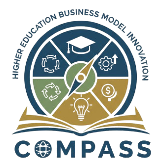

Demographic Shifts
Traditional pipelines are changing, reshaping enrollment assumptions and institutional planning.
A practitioner-executive playbook for rethinking the higher education business model, strengthening shared governance, and building an institutional system for innovation through HEBMIC.

This book begins from a simple premise: universities are not facing one isolated disruption. They are facing a cluster of strategic pressures that demand a more disciplined, mission-aligned, and governance-legitimate response.
Traditional pipelines are changing, reshaping enrollment assumptions and institutional planning.
Escalating operating costs are challenging affordability, margins, and long-term sustainability.
AI and digital change are redefining teaching, work, competition, and institutional capability.
Alternative providers and new market entrants are changing the higher education landscape.
Labor market demands are raising expectations for relevance, adaptability, and applied value.
Institutions must demonstrate clarity of value, credibility of outcomes, and stewardship of mission.
Accreditation, compliance, and policy complexity shape what can change and how change proceeds.
Revenue pressure and structural imbalance make business model questions impossible to avoid.
These three questions move the conversation beyond surface pressures and toward the deeper structural issues institutions can no longer postpone.
What if the greatest threat is not political pressure, declining enrollment, or shrinking budgets, but the refusal to talk about the university’s business model?
What if the greatest barrier is not resistance to change, but misunderstanding how change should happen through shared governance?
What if innovation is not the problem, but the lack of a system to guide it?

The Higher Education Business Model Innovation Compass helps institutions diagnose pressures, map the current model, design credible pathways, secure governance approval, and implement with discipline.
Clarify pressures, risks, and strategic opportunities.
Make the current business model visible and legible.
Develop mission-aligned innovation pathways.
Sequence work and secure governance legitimacy.
Pilot, learn, refine, scale, or sunset initiatives.
Designed for decision-makers who must connect mission, governance, strategy, finance, enrollment, and innovation into a coherent institutional response.
A featured video conversation introducing the ideas behind the book and the HEBMIC methodology.
An interactive AI companion for exploring the HEBMIC methodology, thinking through institutional challenges, and translating the framework into practical strategic conversations.
For speaking, collaboration, academic conversations, or inquiries related to the book, the digital library, or HEBMIC AI, please feel free to reach out.
Discover the growing library of conversations and companion resources connected to the book and methodology.